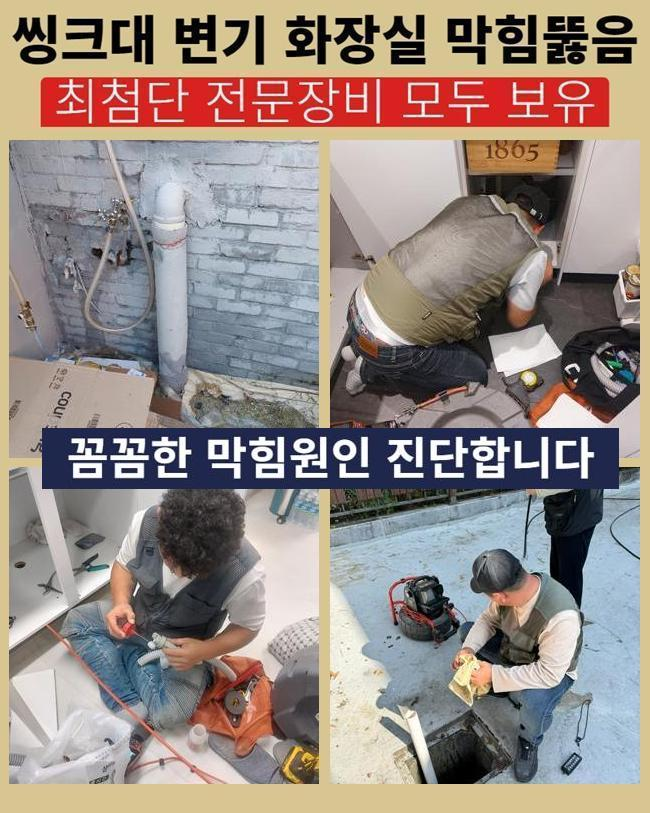
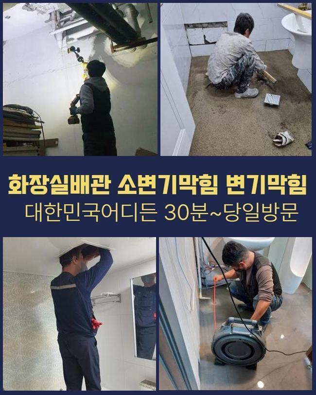
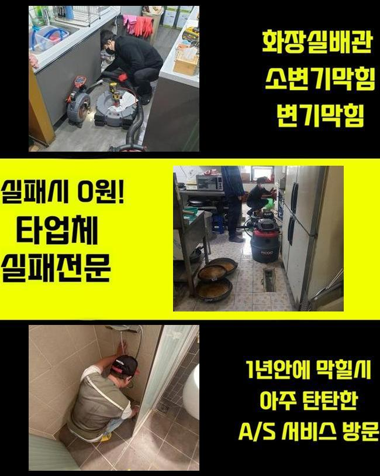
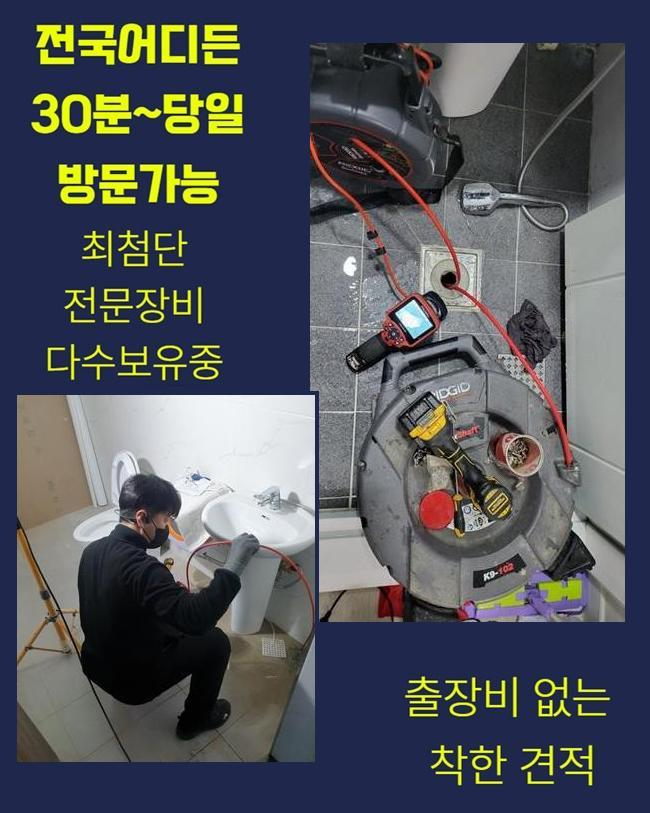
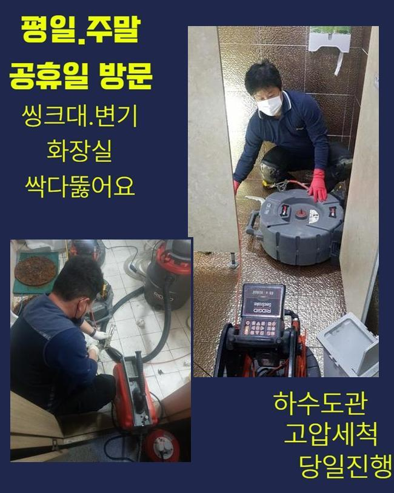
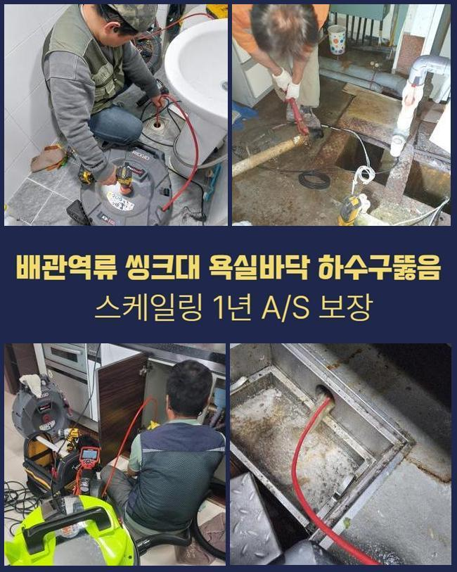

🏠 파주 산남동하수구막힘 조리읍 하수구뚫는비용 누수탐지공사
파주 남동 싱크대막힘 전문 시공 후기

📋 작업 개요
- 위치: 파주 남동, 남동, 파주
- 서비스 유형: 싱크대막힘, 변기막힘, 하수구막힘, 배관막힘, 누수수리, 역류해결, 뚫는업체, 고압세척, 설비공사, 배관보수, 악취차단
- 작업 일시: 2025. 5. 17. 16:57
- 업체명: 하수구수사대 (010-5615-2118)
🔍 문제 상황
파주 산남동하수구막힘 조리읍 하수구뚫는비용 누수탐지공사
하수구 물이 정상 배출이 안되면 일상 중에 어려움을 느낄 수 있어요
가장 흔한 사건이라 함은 한 집 안의 싱크대가 이물질이 유입되어서 물의 흐름이 끊기는 케이스도 다수이며 변기설비나 바닥 배수구 세탁공간에 물이 차올라서 이용에 제약이 빚어지기도 해요
아파트에 사시는 고객님께 의뢰를 받은 상황이라면 세대 내 배관이 막힌 것이니 실내에서 각종 기계들을 활용하여 막힘을 없애줍니다
굵은 메인배관의 경우에는 공용 아파트의 경우라면 보통 정해둔 시기마다 정기적으로 클리닝을 받기 때문에 이 부분이 말썽을 부리는 경우는 비교적 흔치 않아요
영업장이 자리한 빌딩이면 하수 문제가 나타날 가능성이 상대적으로 통계적으로 많기는 합니다
이번 막힘 케이스는 상가에 장착되어 있는 중심 배관이 폐쇄되어 공용 화장실과 가게 안의 배수마저 힘들어져서 제일 빠르게 와달라고 저희를 찾아주신 것이었습니다
무슨 일인지 들여다보니 오류가 있다는 게 감지된 메인 배수로가 있는 장소가 파악돼서 진행을 시작했습니다
이 설비에 장애가 생기면 집 안에 놓여있는 작은 관로의 문제로 치부할 수는 없고 너비가 넓은 메인관로에 훼손이 이루어졌거나 이물질이 한껏 침투해서 배수 효율이 떨어졌을 상황일 때가 많습니다

🔎 원인 분석
💡 전문가 진단: 정밀 진단 장비를 사용하여 슬러지의 고착 여부를 판명하고 타격/세척 작업을 실시했습니다.
큰 흐름을 관장하는 파이프부터 뚫어내고 점차 사이즈가 작은 파이프라인까지 세척합니다
천장 내부에 감춰진 파이프였으므로 사다리를 타고 올라가서 고쳐내기로 다짐하고 막혀있는 하수구의 해결책이 될 장비를 끌고가서 세팅했습니다
상부만 뚫어내더라도 하단의 배관 파트는 아직 수습이 되지 못했으니 메인관로 정화를 도울 때는 파이프라인 전체를 원활하게 풀어내야 합니다
파이프캡을 열고 협소하다면 타공도 추가해서 원활한 하수도 작업이 가능할 공간을 최종적으로 구축합니다
내부 관찰을 돕는 내시경으로 어두워서 잘 보이지 않는 내부 상태를 점검해 보았습니다
오염물이 얼마나 들어차 있는지 장애물을 만들어 낸 그 존재에 대해서 작업에 당장 들어가기 전에 판단해야 작업의 노선을 결정해낼 수 있습니다
메인관로가 다쳤다면 파이프 사이즈가 대개 여유롭고 길이도 길어서 일반 주택 현장에 찾아갔을 때 주로 구동하게 되는 석션장치로는 다스리기 힘듭니다
연결부의 길이가 바닥까지 내려가기는 사실상 무리가 있고 찌꺼기를 모으기엔 집수통이 모자라요
기름기를 갈아내서 스케일링하는 기능을 담당해주는 샤프트기 시간이 오래 소요되며 구멍을 여러개 타공해야 하니 문제가 될 듯 했습니다

🔧 작업 과정
상업시설 안의 하수구 소통이 원활하지 못하다면 오염된 곳들을 다 치워줘서 말끔하게 만들어줘야 합니다
통쾌한 물살을 쏘면서 곳곳에 퍼져있는 찌꺼기들을 완전히 제거될 수 있게끔 시공해서 파이프 안을 장애물 없는 환경으로 만들어야 수시로 봉인되는 일들을 다스릴 수 있게 됩니다
하수구가 틈도 없이 차버리면 작업에 착수하기가 그만큼 난해할 수 있으므로 처음에는 스프링을 진입시켜서 봉인되어버린 파트를 집중 타격해서 순환이 되도록 조성한 후에 세부적인 하수구 정비를 들어가기로 결정했습니다
본장비를 도달시키기 위해 슬러지 축적이 과한 쪽에 틈을 만들고 확장시켜나가서 공간을 만들어주었습니다
오늘 보여드린 상가는 여러 개의 식품 영업장들이 성황리에 운영 중이었고 그만큼 기름기도 많이 알게 모르게 빠져나가서 관로 위에 굵은 유막이 여러 겹 쌓여 있었습니다
끓는 물을 들이부어도 기름기는 개선될수 없기때문에 찌꺼기가 한참 됐다면 석회질로 변모해서 딱 달라붙게 되는 방해요소가 되어버립니다
적기에 하수구 안의 스케일링을 해주지 않고 장기간 가만히 둔다면 가장자리 부근부터 쌓여가면서 점점 사세를 넓혀서 이동이 불가하도록 꽉 메워져서 배수기능이 전혀 이뤄지지 않게 되어버려요
끈적한 기름덩어리를 속시원하게 제거하기 위한 루트는 최신식 고압세척기의 기능 덕분에 걸리는 부분 없이 더러워진 하수 배관을 세정해 드릴 수 있었습니다
끈적하니 엉겨붙은 노폐물이 강한 수압에 맞고 점차 정리되는 현황을 배관용 카메라를 이용해서 확인하며 잔여물 없이 정리했어요
일부 장부는 튕겨져 나오던 우람한 덩어리가 자취를 감추기 시작했으며 작은 입자만 겨우 떠 있는 모습이었습니다
고압세척을 시행할 때는 대부분의 케이스에는 오염물질이 자리한 장소들을 두루 긁어내야만 또다시 차단이 되는 등의 사태가 유발되지 않아요
변성까지 이뤄진 기름기를 고압수를 통해 분해하고 관로를 살펴보는 카메라로 가장자리부터 틈까지 관찰하며 깨끗한 상태로 탈바꿈됐나 봤습니다
초반에는 하수가 내려갈 공백이 보이지 않을만큼 상황이 나빴지만 관통하는 기기를 돌리는 단계들을 마무리짓고 보니 모든 유해요소가 사라진 쾌적함을 느낄 수 있었습니다
물이 잘 내려가야하니 수돗물을 폐기해보는 통수검사로써 순조롭게 물이 빠져나가는 완전히 차원이 달라진 성능을 명백히 짚어본 이후에 잘 뚫렸다고 알려드렸습니다


✅ 작업 완료
아까 장비를 배치하기 위해서 타공해준 홀들은 보수하는 도구로 확실하게 보호하여 누수이슈가 터지지 않도록 조치를 취했습니다
기름때로 인해 막힌 하수도로 여러 문제를 낳았던 상가빌딩 중의 매장 안에서 물기가 그대로 머물렀고 싱크대 수돗물의 역류 증세도 나타났던 상황을 처리하고 사무실로 향했습니다
다뤄야 할 설비가 거대하다면 간단하게서 해결해버리기는 곤란한 사안이며 단순하게 접근해서 혼자 뚫어보려고 하다가는 시설물이 데미지를 입는 사례도 아주 많습니다
일반 가정집은 물론이고 규모가 큰 상가라도 하수관에 대한 이해를 바탕으로 정상기능을 복구시켜드리니 개선을 해보셨으면 좋겠습니다




⚠️ 베란다 누수 및 방수 관리 방법
- ✅ 비가 많이 올 때 창틀 주변이나 아래층 천장에 얼룩이 생기는지 정기적으로 확인해 보세요.
- ✅ 우수관 주변 실리콘 마감이 들뜨거나 깨진 틈새가 있는지 손상 여부를 수시로 체크하세요.
- ✅ 베란다 바닥 타일의 줄눈(메지)이 소실되면 그 틈으로 물이 침투하여 누수가 유발됩니다.
- ✅ 누수 의심 증상 발견 시 방치하면 아래층 손실이 커지므로 즉시 전문가의 진단을 받으십시오.
💡 핵심 정리
- 확실한 장비 작업(내시경 점검 및 샤프트 스케일링)으로 원인을 뿌리 뽑습니다.
- 작업 후 1년 이내에 동일한 부위 재발 시 100% 무상 A/S 서비스를 보장합니다.
- 서울 · 경기 · 인천 전 지역에 24시간 언제든 긴급 출동할 수 있도록 항시 대기 중입니다.
❓ 자주 묻는 질문 (FAQ)
🚨 파주 남동 싱크대막힘 문제로 고민이신가요?
정확한 원인 진단과 확실한 시공으로 재발 없는 해결을 약속드립니다.
24시간 긴급 출동 | 서울 · 경기 · 인천 전지역 | 1년 내 재발 시 무상 A/S